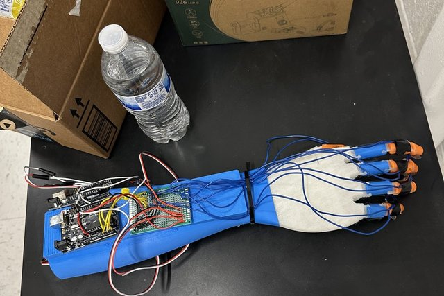

Research
Papers in additive manufacturing, sensor-integrated robotic hands, prosthetic socket fitting, and one in computational social science.
Passed peer review, July 2026
Artificial Intelligence Driven Design and Geometry Optimization in Additive Manufacturing
National High School Journal of Science (NHSJS)
A structured literature review of 19 studies (2018–2026) on how AI actually supports additive-manufacturing design decisions.

Submitted August 2026, in review
Additive Manufacturing of an Anthropomorphic Hand using Force Resistive Sensors for Object Detection
Journal of Future Science and Engineering (JFSE)
A multimaterial 3D-printed robotic hand with film pressure sensors that identifies what it is holding at 98.1% accuracy.
Authoring, fall 2026
Measure Before You Reconstruct: Remote Measurement of Residual-Limb Circumference from Sparse Smartphone Silhouettes
Manuscript in preparation
A remote prosthetic-socket sizing pipeline that measures limb circumference from a handful of calibrated phone photos — no dense 3D reconstruction needed.
Completed, Summer 2025
Evaluating Radicalization through Autism Diagnosis Criteria and Media Addiction
UCSB Summer Research Academies, Track 12 “Digital Brains”
A 4-week study asking which specific autism diagnostic traits — not autism as a monolith — relate to radicalization susceptibility.